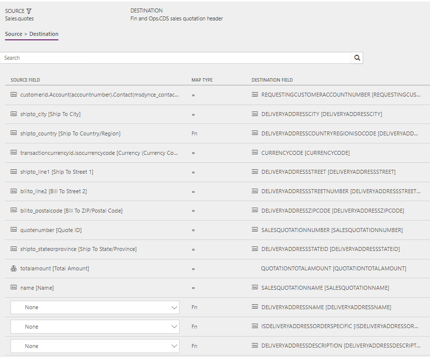

Verkaufsangebotskopfzeilen und ‑positionen direkt von Sales zu Supply Chain Management synchronisieren
Important
Dynamics 365 for Finance and Operations hat sich zu speziell entwickelten Anwendungen entwickelt, mit denen Sie bestimmte Geschäftsfunktionen verwalten können. Weitere Informationen zu diesen Änderungen finden Sie im Dynamics 365-Lizenzierungshandbuch.
Das Thema erklärt die Vorlagen und die zugrunde liegenden Aufgaben, die verwendet werden, um Verkaufsangebotskopfzeilen und -positionen direkt aus Dynamics 365 Sales mit Dynamics 365 Supply Chain Management zu synchronisieren.
Note
Damit Sie die Prospect to Cash-Lösung verwenden können, müssen Sie mit Integration von Daten in Common Data Service for Apps vertraut sein.
Datenfluss in Interessent nach Bargeld
Die Lösung Interessent nach Bargeld verwendet die Datenenintegrationsfunktion, um Daten über Instanzen von Supply Chain Management und Sales hinweg zu synchronisieren. Die „Interessent zu Bargeld“-Vorlagen, die über die Datenintegrationsfunktion verfügbar sind, ermöglichen den Fluss von Konten, Kontakten, Produkten, Verkaufsangeboten, Aufträgen und Verkaufsrechnungen zwischen Supply Chain Management und Sales. Die folgende Abbildung zeigt, wie Daten zwischen Supply Chain Management und Sales synchronisiert werden.

Vorlage und Aufgaben
Die folgende Vorlage und die zugrunde liegenden Aufgaben werden verwendet, um Verkaufsangebotskopfzeilen und -positionen direkt von Sales mit Supply Chain Management zu synchronisieren:
Name der Vorlage in der Datenintegration: Verkaufsangebote (Sales zu Supply Chain Management) - Direkt
Namen der Aufgaben im Datenintegrationsprojekt:
- QuoteHeader
- QuoteLine
Die folgenden Synchronisierungsaufgaben sind erforderlich, bevor die Synchronisierung von Verkaufsangebotskopfzeilen und -positionen erfolgen kann:
- Produkte (Supply Chain Management zu Sales) – Direkt
- Konten (Sales zu Supply Chain Management) – Direkt (falls verwendet)
- Kontakte zu Kunden (Sales zu Supply Chain Management) – Direkt (falls verwendet)
Entitätssatz
| Umsatz | Lieferkettenverwaltung |
|---|---|
| Angebote | CDS-Verkaufsangebotskopf |
| QuoteDetails | CDS-Verkaufsangebotspositionen |
Entitätsfluss
Verkaufsangebote werden in Sales erstellt und mit Supply Chain Management synchronisiert.
Verkaufsangebote aus Sales werden nur synchronisiert, wenn folgende Bedingungen erfüllt sind:
- Alle Angebote in den Verkaufsangebotspositionen werden extern verwaltet.
- Nachdem Sie Angebot aktivieren geklickt haben, ist das Verkaufsangebot aktiv.
Prospect to Cash-Lösung für Sales
Das Feld Verfügt nur über extern verwaltete Produkte ist der Entität Angebot hinzugefügt worden, um stets nachzuverfolgen, ob das Verkaufsangebot vollständig aus extern verwalteten Produkten besteht. Wenn ein Verkaufsangebot nur aus extern verwalteten Produkten besteht, werden die Produkte in Supply Chain Management verwaltet. Mit diesem Verhalten wird sichergestellt, dass Sie nicht versuchen, Verkaufsangebotspositionen mit Produkten zu synchronisieren, die in Supply Chain Management unbekannt sind.
Alle Angebotsprodukte im Vertriebsangebot werden mit der Information Verfügt nur über extern verwaltete Produkte aus der Vertriebsangebotskopfzeile aktualisiert. Diese Informationen können im Feld Angebot hat nur extern verwaltete Produkte in der Entität QuoteDetails gefunden werden.
Ein Rabatt kann zum Angebotsprodukt hinzugefügt werden wird anschließend mit Supply Chain Management synchronisiert. Die Felder Rabatt, Belastungen und Steuer in der Kopfzeile werden durch komplizierte Einstellungen in Supply Chain Management gesteuert. Diese Einstellungen unterstützen aktuell nicht die Integrationszuordnung. Im aktuellen Entwurf werden die Felder Preis, Rabatt, Belastung und Steuer in Supply Chain Management verwaltet und gehandhabt.
In Sales versieht die Lösung die folgenden Felder mit einem Schreibschutz, da die Werte nicht mit Supply Chain Management synchronisiert werden:
- Schreibgeschützte Felder in de Verkaufsangebotskopfzeile: Rabatt %, Rabatt und Frachtbetrag
- Schreibgeschützte Felder auf Angebotsprodukten: Steuer
Voraussetzungen und Einrichtung der Zuordnung
Vor dem Synchronisieren von Verkaufsangeboten müssen die Systeme mit den folgenden Einstellungen synchronisiert werden:
Einrichtung in Sales
Stellen Sie sicher, dass Berechtigungen für das Team, zu dem der Benutzer (aus Ihren Verbindungseinstellungen in Sales) zugewiesen ist, vorhanden sind. Werden Demodaten verwendet, hat in der Regel der Benutzer einen Administratorzugriff aber nicht das Team. Wenn dieses Team nicht Administratorzugriff hat, wenn Sie das Projekt vom Datenintegrator ausführen, erhalten Sie eine Fehlermeldung, die angibt, dass das Hauptteam fehlt.
Wenn Sie Berechtigungen für das Team einrichten, gehen Sie > zu Einstellungen Sicherheit > Teams, und wählen Sie das zutreffende Team aus. Wählen Sie Verwalten Sie Rollen und dann eine Rolle, die die erforderlichen Berechtigungen verfügt, beispielsweise Systemadministrator.
Gehen Sie zu > Sie Einstellungen Verwaltung > Systemeinstellungen > Sales zu öffnen, und überprüfen Sie, ob die folgenden Einstellungen verwendet werden:
- Die Option Systempreisberechnungssystem verwenden wird auf Ja festgelegt.
- Das Feld Rabattberechnungsmethode wird auf Positionsartikel festgelegt.
Einrichtung im Datenenintegrationsprojekt
QuoteHeader
Vergewissern Sie sich, dass die erforderliche Zuordnung für Shipto_Land zu DeliveryAddressCountryRegionISOCode vorhanden ist. In der Wertzuordnungen können Sie einen Standardwert definieren, der verwendet wird, wenn der Wert nicht aktiviert wird. Lassen Sie einfach die linken Seite leer, und legen die rechte Seite auf das gewünschte Land oder die Region fest. Auf diese Weise müssen Sie das Land oder die Region für Zahlungen nationaler Aufträge nicht eingeben.
Der Vorlagenwert ist eine Wertzuordnung, in der verschiedene Länder/Regionen zugeordnet sind, und wo ein leerer Wert dem Wert USA entspricht.
QuoteLine
Stellen Sie sicher, dass die erforderliche Wertzuordnung für SalesUnitSymbol in Supply Chain Management vorhanden ist.
Überprüfen Sie, dass die obligatorischen Einheiten in Sales definiert sind.
Ein Vorlagenwert, eine der Wertzuordnung ist, wird für oumid.name auf SalesUnitSymbol festgelegt.
Optional: Sie können die folgende Zuordnungen hinzufügen, um sicherzustellen, dass Verkaufsangebotspositionen nach Supply Chain Management importiert werden, wenn es weder Standardinformationen vom Debitoren noch vom Produkt gibt:
- SiteId – Ein Standort ist erforderlich, um in Supply Chain Management Angebots- und Vertriebsauftragspositionen zu erstellen. Es gibt keinen Standardvorlagenwert für SiteId.
- WarehouseId – Ein Lager ist erforderlich, um in Supply Chain Management Angebots- und Vertriebsauftragspositionen verarbeiten zu können. Es gibt keinen Standardvorlagenwert für WarehouseId.
Vorlagenzuordnung im Datenintegrator
Note
- Die Felder Rabatt, Belastungen und Steuer werden durch komplizierte Einstellungen in Supply Chain Management gesteuert. Diese Einstellungen unterstützen aktuell nicht die Integrationszuordnung. Im aktuellen Entwurf werden die Felder Preis, Rabatt, Belastung und Steuer von Supply Chain Management gehandhabt.
- Die Felder Zahlungsbedingungen, Frachtkonditionen, Lieferbedingungen, Liefermethode und Liefermodus sind nicht Teil der Standardzuordnungen. Um diese Feldern zuzuordnen, müssen Sie eine Wertzuordnung einrichten, die spezifisch für die Daten in den Organisationen ist, zwischen denen die Entität synchronisiert wird.
Die folgenden Abbildungen zeigen ein Beispiel für eine Vorlagenzuordnung im Datenintegrator.
QuoteHeader
